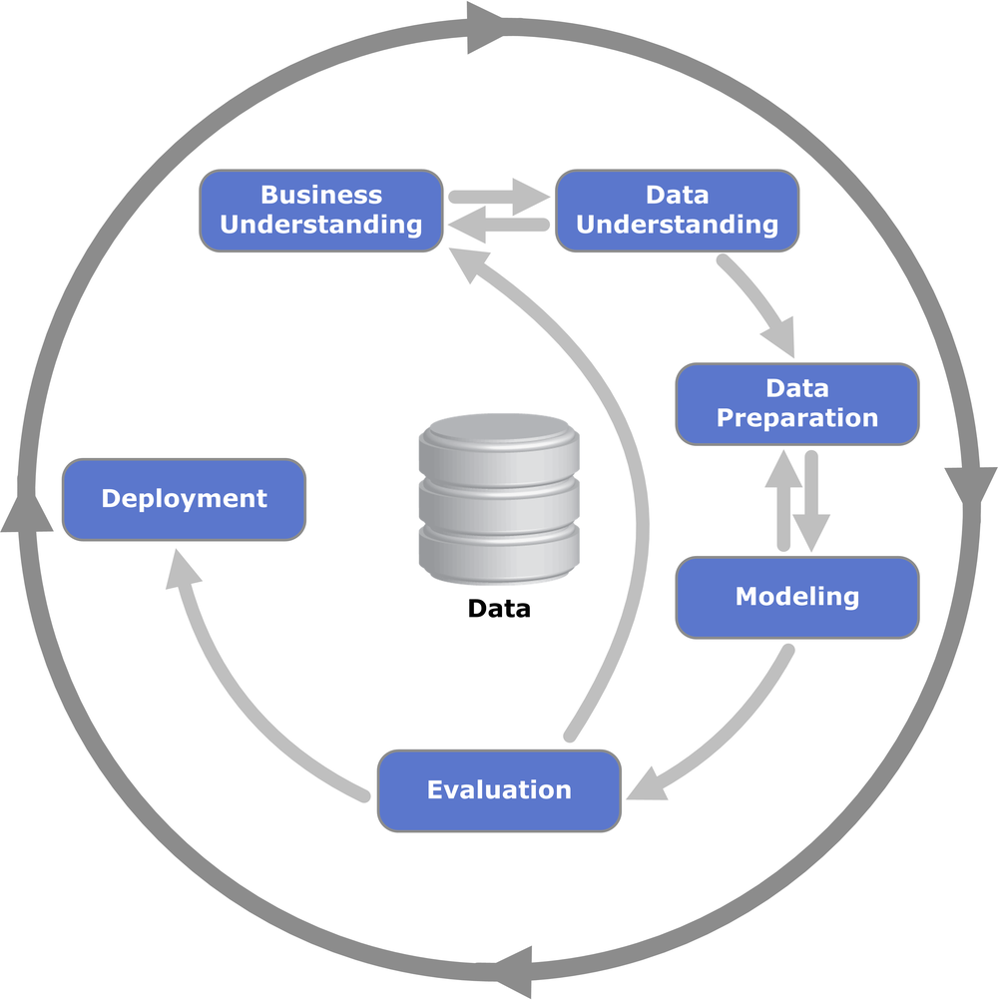

name: title layout: true class: cover --- count: false .section-mark.center[ ## From a business question to a first model ### CRISP-DM, the data, and a first model of credit risk <br /> Oscar Esteban <<code>oscar.esteban@hevs.ch</code>> <br /> EAD · Exploration avancée de données et intelligence décisionnelle · 16.10.2026 ] ??? --- name: newsection layout: true .perma-sidebar[ <p class="rotate"> <a rel="license" href="http://creativecommons.org/licenses/by/4.0/"><img alt="Creative Commons License" style="border-width:0; height: 20px; padding-top: 6px;" src="https://i.creativecommons.org/l/by/4.0/88x31.png" /></a> <span style="padding-left: 10px; font-weight: 600;">From a business question to a first model (16.10.2026)</span> </p> ] --- # This morning builds a first model, then judges it .cards.cols-4.vcenter[ .card.accent[ .kicker[16.10 · morning, first] ### A first model The process, the data, a hands-on. ] .card[ .kicker[16.10 · morning, then] ### Measuring a classifier Metrics, thresholds, cross-validation. ] .card.muted[ .kicker[16.10 · afternoon] ### Beyond two classes Multi-class, deep learning. ] .card.muted[ .kicker[23.10] ### Text and time Text mining, time series. ] ] ??? --- class: stepwise-svg # The three layer system (1977) .boxed-content.center[ <object type="image/svg+xml" data="images/systemic-model.svg" style="width: 70%; margin-top: 28pt; pointer-events: none;"></object> ] .footnote[Recap of week 1. J.-L. Le Moigne (1977), *La théorie du système général*; drawing after J. Bucki and Y. Pesqueux (1994), Fig. 2.] ??? --- class: stepwise-svg # Supervised learning mines the past to predict The focus of 16.10 and 23.10: models learned from past cases whose outcome is known. .boxed-content.center[ <object type="image/svg+xml" data="images/mining-vs-using.svg" style="width: 92%; padding-top: 12pt; pointer-events: none;"></object> ] .footnote[.book[<i class="fa-solid fa-book-open"></i> After Provost & Fawcett (2013), Fig. 2-1, p. 26], redrawn with height and sex. The two curves are illustrative, not measured.] ??? --- class: stepwise-svg # Data mining & statistical learning .dm-quote[ > Data mining is the process of extracting and finding patterns in massive data sets involving methods at the intersection of machine learning, statistics, and database systems.<sup>[1]</sup> .src[[1] SIGKDD (2006-04-30). "[Data Mining Curriculum: A Proposal](https://www.kdd.org/curriculum/index.html)". kdd.org (Association for Computing Machinery). Archived from the original on 2013-10-14. Retrieved 2014-01-27.] ] .boxed-content.center[ <object type="image/svg+xml" data="images/kdd-to-crisp.svg" style="width: 96%; padding-top: 14pt; pointer-events: none;"></object> ] .footnote[Quote: Wikipedia, *Data mining* (revision of 9 September 2026), .lic[CC BY-SA 4.0]. KDD: after U. Fayyad, G. Piatetsky-Shapiro and P. Smyth (1996), Fig. 1; their text lists nine steps, the two ends included (pp. 41 to 42).] ??? --- # Data mining + business .pull-left[ <p></p> ] .pull-right[ <br /> **CRISP-DM**: the *Cross-Industry Standard Process for Data Mining*. **Business understanding** comes first: the question, before any data. **Deployment** closes the cycle: the *use* of the model, the half of slide 3 that KDD left out. The **inner arrows** are the frequent moves, not a fixed order; the **outer circle** starts the next turn. ] .footnote[Diagram: Kenneth Jensen, based on IBM SPSS Modeler CRISP-DM documentation, .lic[CC BY-SA 3.0, via Wikimedia Commons]. Model: P. Chapman et al. (2000), *CRISP-DM 1.0*, Fig. 2, p. 13. <br /> .book[<i class="fa-solid fa-book-open"></i> Provost & Fawcett (2013), Fig. 2-2, p. 27]] ??? --- class: stepwise-svg # Drawn as a line, the cycle shows where to stop .pull-left[ <object type="image/svg+xml" data="images/crisp-linear.svg" style="height: 540px; pointer-events: none;"></object> ] .pull-right[ <br /> Three gates, each a task of CRISP-DM 1.0: - **Verify data quality** (task 2.4): can these data answer the question? - **Assess model** (task 4.4): is it worth preparing the data again? - **Determine next steps** (task 5.3): deploy, turn again, or stop. The last step of the build names the Dataiku screen of each phase. ] .footnote[Phases and tasks: P. Chapman et al. (2000), *CRISP-DM 1.0*, pp. 13 to 31. Gates adapted from D. Genoud's 2025 flowchart.] ??? --- class: stepwise-svg # Mapping CRISP-DM and the ML canvas .pull-left[ <object type="image/svg+xml" data="images/crisp-linear-canvas.svg" style="height: 540px; pointer-events: none;"></object> ] .pull-right[ <br /> <object type="image/svg+xml" data="images/ml-canvas-course.svg" style="width: 94%; margin-right: 6%; pointer-events: none;"></object> ] .footnote[Canvas: L. Dorard, *The Machine Learning Canvas* v1.1 (ownml.co), .lic[CC BY-SA 4.0], with the regions drawn on it in week 1 (cropped). Flowchart colours: those regions. Which boxes each phase fills is this course's reading, not Dorard's.] ??? --- # Choosing the right model <img class="phase-thumb" src="images/phase-mo.svg" alt="The CRISP-DM phases, modeling lit" /> .beside-thumb[ A key activity of modeling: CRISP-DM task 4.1, *Select modeling technique* (Chapman et al. 2000, p. 27). <img src="images/sklearn-ml-map.png" style="width: 80%; display: block; margin: 0.2em auto 0;" alt="The scikit-learn algorithm cheat sheet: from START, questions on the data lead to classification, regression, clustering or dimensionality reduction" /> ] .footnote[*Choosing the right estimator* (ml_map.png), scikit-learn 1.5.0 documentation, © 2007-2024 the scikit-learn developers, .lic[BSD 3-Clause]; first drawn by A. Mueller (2013).] ??? --- class: stepwise-svg # CRISP-DM: nested iterative cycles .col-wide[ <object type="image/svg+xml" data="images/nested-cycles.svg" style="width: 100%; pointer-events: none;"></object> ] .col-narrow[ <br /><br /> .step-4[ > iteration is the rule rather than the exception .book[<i class="fa-solid fa-book-open"></i> Provost & Fawcett (2013), p. 27] A first turn that does not solve the problem is not a failure: the next one knows more. A data-mining project is closer to research than to engineering (p. 34). SENSIMED took years of turns. ] ] .footnote[.book[<i class="fa-solid fa-book-open"></i> After Provost & Fawcett (2013), pp. 27, 28 and 34.] Cycle and inner loops: P. Chapman et al. (2000), *CRISP-DM 1.0*, Fig. 2, p. 13.] ??? --- class: stepwise-svg # SENSIMED took years of turns to aid diagnosis .boxed-content.center[ <object type="image/svg+xml" data="images/sensimed-timeline.svg" style="width: 100%; padding-top: 6pt; pointer-events: none;"></object> ] .footnote[Above the arrow, the record: CTI project 17325.1; FDA, 4 March 2016; K. Martin et al. (2018), *Am. J. Ophthalmol.* 194:46 to 53. Below it, the stages and pictures as D. Genoud's team presented them (*Warm-up*, EAD, 2025, p. 7).] ??? --- class: stepwise-svg # Human-in-the-loop .board[ <img src="images/crisp-linear-canvas.svg" alt="The linear CRISP-DM flowchart in the canvas colours" /> <div class="rowcard goal step-1" style="top: 28px;"><b>Business understanding</b>: formulate the problem, what to predict and for which decision</div> <div class="rowcard learn step-2" style="top: 100px;"><b>Data understanding</b>: judge what each data source costs and what it is worth</div> <div class="rowcard learn step-3" style="top: 221px;"><b>Data preparation</b>: define the variables, and spot those that leak the answer</div> <div class="rowcard evaluate step-4" style="top: 387px;"><b>Evaluation</b>: check the business goal, not only the model; get the stakeholders to sign off</div> <div class="rowcard goal step-5" style="top: 507px;"><b>Deployment</b>: have the model rebuilt for production by engineers</div> ] .footnote[.book[<i class="fa-solid fa-book-open"></i> Provost & Fawcett (2013), pp. 28 to 33.]] ??? --- class: stepwise-svg # The bank's canvas: the decision before the data <img class="phase-thumb" src="images/phase-bu.svg" alt="The CRISP-DM phases, business understanding lit" /> .beside-thumb[ <div class="ml-canvas"> <div class="pt predict"><h4>PREDICTION TASK</h4><p class="step-4">Will this credit go bad? Two classes, and a probability for each application.</p></div> <div class="dec predict"><h4>DECISIONS</h4><p class="step-4">Grant or refuse the application.</p></div> <div class="vp goal"><h4>VALUE PROPOSITION</h4><p class="step-1">The credit committee refuses fewer good customers and grants fewer credits that go bad.</p></div> <div class="col learn"><h4>DATA COLLECTION</h4><p class="step-2">Each credit's outcome is known only when it ends, repaid or not.</p></div> <div class="src learn"><h4>DATA SOURCES</h4><p class="step-2">The bank's past credits: the application, the accounts, how each credit ended.</p></div> <div class="imp predict"><h4>IMPACT SIMULATION</h4><p class="step-4">Price the two errors: next slide.</p></div> <div class="mak predict"><h4>MAKING PREDICTIONS</h4><p class="step-4">For each application, before the committee decides.</p></div> <div class="bld learn"><h4>BUILDING MODELS</h4><p class="step-4">Learned from the past credits, again as new outcomes arrive.</p></div> <div class="fea learn"><h4>FEATURES</h4><p class="step-3">What the bank knows at the application: accounts, duration, purpose, amount, savings, age, ...</p></div> <div class="mon evaluate"><h4>MONITORING</h4><p class="step-5">Count the credits that went bad and the good customers refused, as credits end.</p></div> </div> ] .footnote[Canvas: after L. Dorard, *The Machine Learning Canvas* v1.1 (ownml.co), .lic[CC BY-SA 4.0], filled for the bank in the order of the phases on slide 7.] ??? --- class: stepwise-svg # Two errors, two prices <img class="phase-thumb" src="images/phase-bu.svg" alt="The CRISP-DM phases, business understanding lit" /> .beside-thumb[ <object type="image/svg+xml" data="images/expected-value.svg" style="width: 100%; padding-top: 6pt; pointer-events: none;"></object> Granting a credit that goes bad costs more than refusing a good customer. How much more is a business figure, not a data figure. ] .footnote[.book[<i class="fa-solid fa-book-open"></i> After Provost & Fawcett (2013), Fig. 7-2, p. 197], redrawn for a credit decision, with rows and columns swapped to match the next deck; values: pp. 194 to 199.] ??? --- class: stepwise-svg # The data: what one row knows <img class="phase-thumb" src="images/phase-du.svg" alt="The CRISP-DM phases, data understanding lit" /> .beside-thumb.terms[ <table> <tr><th>status</th><th>duration</th><th>purpose</th><th>amount</th><th>savings</th><th>age</th><th>...</th><th class="tgt">credit_risk</th></tr> <tr><td>no checking account</td><td>18</td><td>car (used)</td><td>1049</td><td>unknown or none</td><td>21</td><td>...</td><td class="tgt">good</td></tr> <tr><td>no checking account</td><td>9</td><td>others</td><td>2799</td><td>unknown or none</td><td>36</td><td>...</td><td class="tgt">good</td></tr> <tr><td>below 0 DM</td><td>12</td><td>retraining</td><td>841</td><td>below 100 DM</td><td>23</td><td>...</td><td class="tgt">good</td></tr> <tr><td>below 0 DM</td><td>36</td><td>domestic appliances</td><td>2384</td><td>unknown or none</td><td>33</td><td>...</td><td class="tgt">bad</td></tr> <tr><td>no checking account</td><td>18</td><td>others</td><td>1216</td><td>unknown or none</td><td>23</td><td>...</td><td class="tgt">bad</td></tr> </table> <div class="legend step-1"> <div><b>A row, an instance</b>: one credit the bank granted.</div> <div><b>A column, an attribute</b>: what the bank knew when it decided.</div> <div><b>The target</b>: <code>credit_risk</code>, known only once the credit ended.</div> </div> <div class="facts step-2"> <div><span class="num">1,000</span>credits from a south German bank, 1973 to 1975, with 20 attributes.</div> <div><span class="num">30%</span>bad, by design: in the bank's portfolio, about 5% went bad.</div> <div><span class="num">0</span>refused applicants: the data hold only credits the bank granted.</div> </div> ] .footnote[Rows 1, 2, 3, 23 and 46 of the course file. U. Grömping (2019), *South German Credit Data: Correcting a Widely Used Data Set*, Report 4/2019, Beuth Hochschule für Technik Berlin; UCI Machine Learning Repository, dataset 573, .lic[CC BY 4.0]. .book[<i class="fa-solid fa-book-open"></i> Terms: Provost & Fawcett (2013), pp. 45 to 46.]] ??? --- class: stepwise-svg # Credit scoring is classification, with a probability <img class="phase-thumb" src="images/phase-mo.svg" alt="The CRISP-DM phases, modeling lit" /> .beside-thumb[ <object type="image/svg+xml" data="images/mining-vs-using-credit.svg" style="width: 92%; padding-top: 4pt; pointer-events: none;"></object> On the map of slide 8: a category to predict, with labelled data, leads to **classification**. As with height and sex on slide 3, the model returns a probability; the bank still has to decide where to cut. ] .footnote[.book[<i class="fa-solid fa-book-open"></i> After Provost & Fawcett (2013), Fig. 2-1, p. 26; classification and class probability estimation, pp. 20 and 25.] The probability shown is an example.] ??? --- # Hands-on 1: explore, train, look, note <img class="phase-thumb" src="images/phase-du-mo.svg" alt="The CRISP-DM phases, data understanding to modeling lit" /> .beside-thumb[ .need[**The need.** The bank asks whether a model could help it decide. Before anyone explains how to judge a model, look at one.] <div class="moves"> <div><b>1. Explore</b>The credits, and how many went bad.<br /><code>Dataset → Explore, Charts</code></div> <div><b>2. Train</b>A first model, with Dataiku's defaults.<br /><code>Lab → AutoML Prediction</code></div> <div><b>3. Look</b>Its results: what does each screen show?<br /><code>Results → model</code></div> <div><b>4. Note</b>Three things you see, or cannot explain yet.<br />On the sheet</div> </div> <div class="roles"> <div><b>Driver</b>: works Dataiku; says what each screen shows before clicking on.</div> <div><b>Mapper</b>: writes the answers and places each note on a phase of the map.</div> <div><b>Referee</b>: checks each step, challenges each conclusion, speaks for the group.</div> </div> .need[Sheet *Hands-on 1*, panels 1 to 3. Groups of three. 40 minutes.] ] ??? --- # Bring back three notes for the next deck .board[ <img src="images/crisp-linear-canvas.svg" alt="The linear CRISP-DM flowchart in the canvas colours" /> <div class="next" style="top: 387px;">← next deck</div> <div class="side"><ul> <li>The Mapper tags each note with the phase it belongs to.</li> <li>The Referee reads one note, and it goes on the map.</li> <li>The next deck starts from <b>evaluation</b>: is the model good enough for the bank?</li> </ul></div> ] ??? --- # Read the book this deck draws on .cards.cols-3.vcenter[ .card.accent[ .kicker[chapter 2] ### The process Business problems, the canonical tasks, CRISP-DM. ] .card[ .kicker[chapter 3] ### Predictive modelling Instances, attributes, targets; trees. ] .card[ .kicker[chapter 7] ### Decision analytic thinking Costs, the confusion matrix: the next deck. ] ] .admonition[ <i class="fa-solid fa-book-open"></i> F. Provost and T. Fawcett (2013), *Data Science for Business*, O'Reilly. Available to HES-SO students through the school's O'Reilly access. ] ??? --- # References .refs[ - ACM SIGKDD (2006). *Data Mining Curriculum: A Proposal*. kdd.org, archived 14 October 2013. - Bucki, J. and Pesqueux, Y. (1994). Pour un renouveau du concept de système d'information. Working paper, HAL hal-00494174. - Chapman, P. et al. (2000). *CRISP-DM 1.0: Step-by-step data mining guide*. SPSS. - Dorard, L. *The Machine Learning Canvas*, v1.1. ownml.co. CC BY-SA 4.0. Regions as drawn in *Data science 1*, slides of the EAD module, week 1. - Fayyad, U., Piatetsky-Shapiro, G. and Smyth, P. (1996). From data mining to knowledge discovery in databases. *AI Magazine* 17(3):37 to 54. - Genoud, D. (2025). Warm-up, slides of the EAD module, HES-SO Master. Example and pictures: SENSIMED projects. - Grömping, U. (2019). South German Credit Data: Correcting a Widely Used Data Set. Report 4/2019, Beuth Hochschule für Technik Berlin. Data: UCI Machine Learning Repository, dataset 573, doi:10.24432/C5QG88, CC BY 4.0. - Jensen, K. (2012). CRISP-DM Process Diagram. Wikimedia Commons, CC BY-SA 3.0. - Le Moigne, J.-L. (1977). *La théorie du système général. Théorie de la modélisation*. PUF. - Martin, K. et al. (2018). Use of machine learning on contact lens sensor-derived parameters for the diagnosis of primary open-angle glaucoma. *American Journal of Ophthalmology* 194:46 to 53. - Provost, F. and Fawcett, T. (2013). *Data Science for Business*. O'Reilly. - scikit-learn developers. *Choosing the right estimator* (ml_map.png). scikit-learn 1.5.0 documentation, BSD 3-Clause. - Wikipedia contributors. *Data mining*, revision 1374109996 (9 September 2026). CC BY-SA 4.0. ] ???